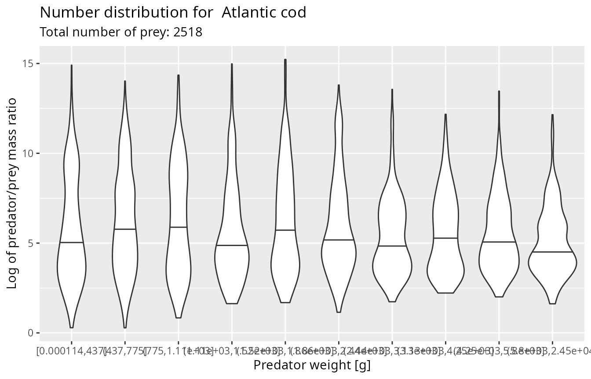
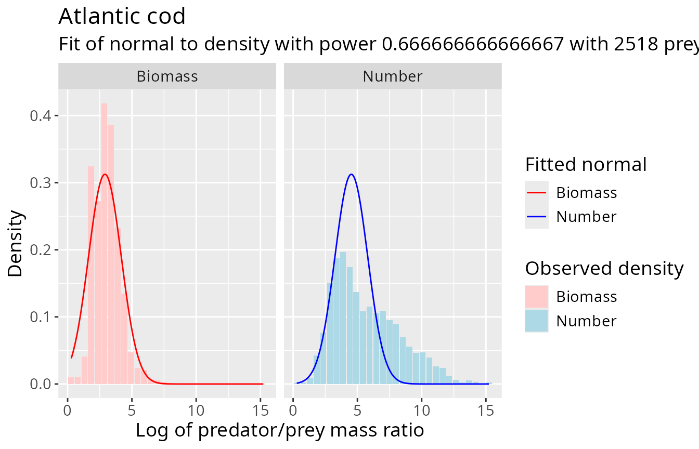
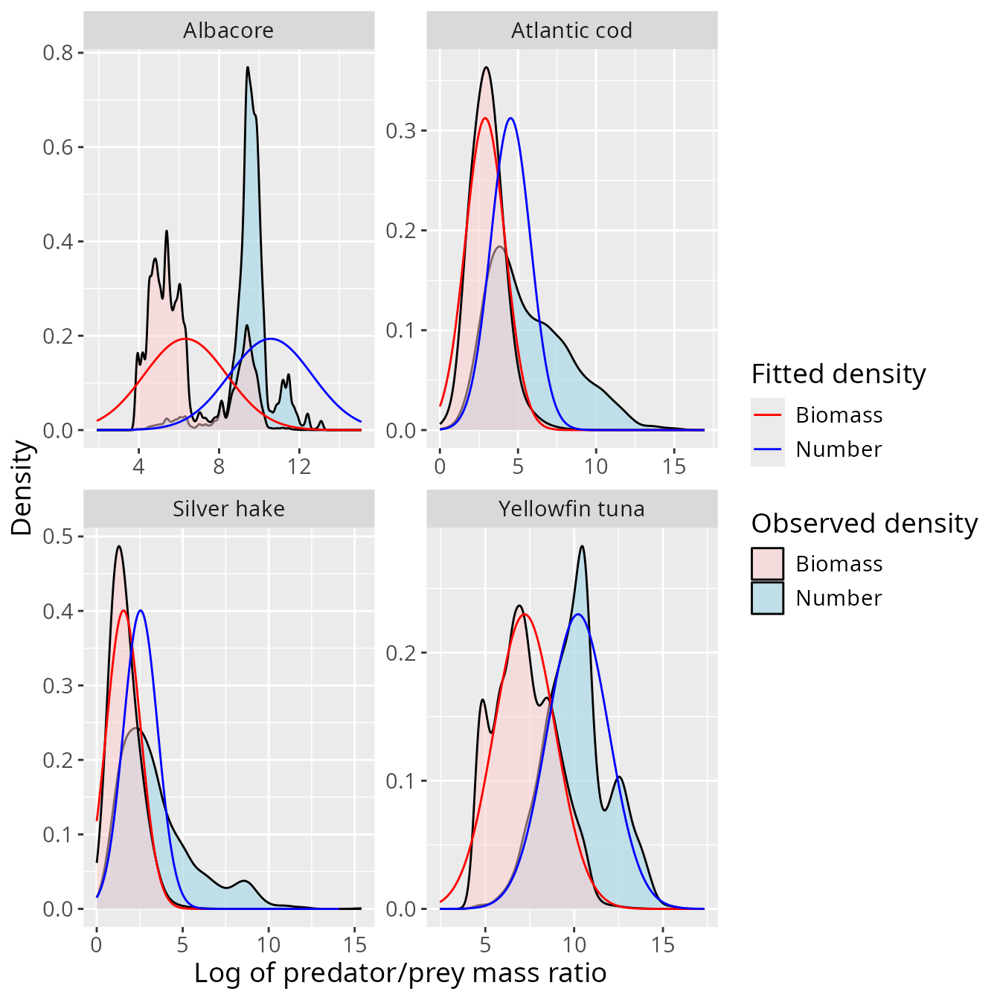
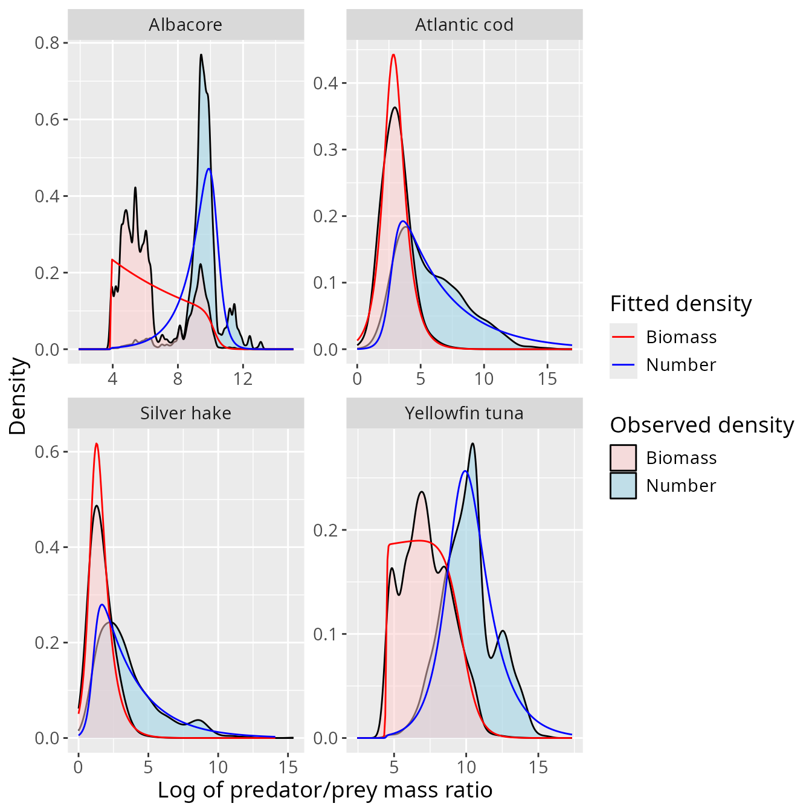

Choosing and diagnosing a log-PPMR distribution
Source:vignettes/PPMR_distributions.Rmd
PPMR_distributions.RmdThis article develops the diagnostic choices introduced in
vignette("mizerStomach"). It uses only
barnes_data, which is distributed with the package, and
focuses on questions that should be answered before a fit is transferred
to a mizer model:
- Is one log predator/prey mass-ratio (log-PPMR) distribution adequate across predator sizes?
- Which observations should receive most weight?
- Does a fitted family describe both the relevant centre and the consequential tails?
The mathematical relationship among weighting exponents is derived in
vignette("density_functions").
Start with the observations
Each row of barnes_data describes one prey item, so
n_prey is one. Other datasets can aggregate repeated
observations by placing their count or frequency in
n_prey.
head(barnes_data, 4)
#> # A tibble: 4 × 5
#> species w_pred w_prey n_prey log_ppmr
#> <chr> <dbl> <dbl> <dbl> <dbl>
#> 1 Atlantic bluefin tuna 61666 3.51 1 9.77
#> 2 Atlantic bluefin tuna 61666 3.51 1 9.77
#> 3 Atlantic bluefin tuna 61666 3.51 1 9.77
#> 4 Atlantic bluefin tuna 61666 4.63 1 9.50
cat(length(unique(barnes_data$species)), "predator species\n")
#> 12 predator speciesThe package deliberately ignores prey identity when fitting PPMR distributions. Consequently, a species-level fit averages over prey communities, seasons, locations, cruises, and individual stomachs represented in the supplied data. Decide whether that aggregation is defensible before interpreting the result as a stable predator trait.
Common data problems include:
- rounded or imputed predator and prey masses;
- small prey that are missed, highly digested, or identified only to a broad taxonomic group;
- rare large prey that are absent from a finite sample;
- unequal sampling effort among predator sizes, places, or seasons; and
- rows from the same stomach or cruise that are not statistically independent.
validate_ppmr_data() checks the package’s data contract,
but these scientific issues require knowledge of the sampling
programme.
Check dependence on predator size
A species-level fit assumes that the conditional log-PPMR
distribution is adequately stable across predator sizes.
plot_ppmr_violins() divides the observations into ten
predator-mass groups with approximately equal numbers of rows. The
number-weighted view emphasizes small prey, while
power = 2/3 emphasizes the part of the distribution
relevant to diet biomass under the package’s digestion assumption.
set.seed(1)
plot_ppmr_violins(barnes_data, "Atlantic cod", power = 0)
#> Warning: `quantiles` for weighted data is not implemented.
#> `quantiles` for weighted data is not implemented.
#> `quantiles` for weighted data is not implemented.
#> `quantiles` for weighted data is not implemented.
#> `quantiles` for weighted data is not implemented.
#> `quantiles` for weighted data is not implemented.
#> `quantiles` for weighted data is not implemented.
#> `quantiles` for weighted data is not implemented.
#> `quantiles` for weighted data is not implemented.
#> `quantiles` for weighted data is not implemented.
set.seed(1)
plot_ppmr_violins(barnes_data, "Atlantic cod", power = 2 / 3)
#> Warning: `quantiles` for weighted data is not implemented.
#> `quantiles` for weighted data is not implemented.
#> `quantiles` for weighted data is not implemented.
#> `quantiles` for weighted data is not implemented.
#> `quantiles` for weighted data is not implemented.
#> `quantiles` for weighted data is not implemented.
#> `quantiles` for weighted data is not implemented.
#> `quantiles` for weighted data is not implemented.
#> `quantiles` for weighted data is not implemented.
#> `quantiles` for weighted data is not implemented.
Look for systematic movement of the centre, spread, or shape across predator groups. If it is substantial, options include:
- fitting a biologically justified predator-size range with
min_w_pred; - stratifying the data and fitting separate distributions; or
- using a hierarchical model that represents predator size and sampling structure explicitly.
The random perturbation used to separate tied predator masses is why the examples set a seed.
Choose the fitted weighting
fit_log_ppmr() weights row
by
,
where
is power. A direct fit at power = 0 emphasizes
the numerous small prey in the right tail of log PPMR. A biomass fit at
power = 1 emphasizes the rarer large prey in the left tail.
Here we use power = 2/3 to focus on digestion-adjusted diet
biomass.
This choice is part of the estimand. It should not be selected solely because it makes a particular parametric family look attractive.
Normal distribution
A normal fit uses the weighted mean and weighted maximum-likelihood standard deviation. It is easy to interpret, and maps to mizer’s lognormal feeding kernel, but it is symmetric and has unbounded tails.
cod_normal <- fit_log_ppmr(
barnes_data,
species = "Atlantic cod",
distribution = "normal",
power = 2 / 3
)
cod_normal
#> mean sd species distribution power min_w_pred
#> Atlantic cod 3.443057 1.276434 Atlantic cod normal 0.6666667 0
plot_log_ppmr_fit(barnes_data, cod_normal, type = "histogram")
The fitted curve is shown at both power = 0 and
power = 1. A normal fit can match the density near the
fitted weighting while implying too much mass in a transformed tail.
Negative log PPMR corresponds to prey heavier than the predator, so a
curve placing substantial density there deserves particular
scrutiny.
Smoothly truncated exponential
The truncated-exponential family has an exponential interior and smooth logistic cutoffs at both ends. The five parameters control the slope, cutoff locations, and cutoff steepnesses. They are estimated by weighted maximum likelihood.
cod_truncated <- fit_log_ppmr(
barnes_data,
species = "Atlantic cod",
distribution = "trunc_exp",
power = 2 / 3
)
cod_truncated
#> alpha ll ul lr ur species
#> Atlantic cod -0.9333927 2.79338 2.777 22.28715 19.99663 Atlantic cod
#> distribution power min_w_pred
#> Atlantic cod trunc_exp 0.6666667 0
plot_log_ppmr_fit(barnes_data, cod_truncated, type = "histogram")
This family is useful when an unconstrained normal tail is biologically implausible or when the observed density has a long approximately exponential region. It is also a nonlinear five-parameter fit: inspect its curve, try sensible starting values when necessary, and do not interpret the smallest and largest observed prey as known physiological boundaries.
A previous truncated-exponential fit can supply starting values:
cod_truncated <- fit_log_ppmr(
barnes_data,
distribution = "trunc_exp",
fits = cod_truncated
)Compare several species
Fits are independent by species even when requested in one call. The following comparison shows why one family need not be appropriate for every predator.
selected_species <- c(
"Albacore", "Atlantic cod", "Silver hake", "Yellowfin tuna"
)
normal_fits <- fit_log_ppmr(
barnes_data,
species = selected_species,
distribution = "normal",
power = 2 / 3
)
plot_log_ppmr_fit(barnes_data, normal_fits)
truncated_fits <- fit_log_ppmr(
barnes_data,
species = selected_species,
distribution = "trunc_exp",
power = 2 / 3
)
plot_log_ppmr_fit(barnes_data, truncated_fits)
The plots are diagnostics rather than an automatic model-selection procedure. The package does not currently return comparable AIC values or perform a goodness-of-fit test. Prefer the simplest family that captures the region and tails relevant to the intended model use, and report the choice and weighting.
Direct fitting versus transformation
Closed-form transformations describe what a fitted family implies at another weighting. They do not guarantee that a direct fit to the newly weighted observations has the same parameters when the family is only approximate or when predator size affects PPMR.
cod_number_normal <- fit_log_ppmr(
barnes_data, "Atlantic cod", "normal", power = 0
)
cod_diet_from_number <- transform_fit(cod_number_normal, power = 2 / 3)
rbind(
direct_diet_fit = cod_normal[c("power", "mean", "sd")],
transformed_number_fit =
cod_diet_from_number[c("power", "mean", "sd")]
)
#> power mean sd
#> direct_diet_fit 0.6666667 3.443057 1.276434
#> transformed_number_fit 0.6666667 1.217317 2.600442A large difference is useful diagnostic evidence. Fit directly at the weighting that matters most, and use transformations to examine the consequences elsewhere.
Gaussian mixtures
distribution = "gauss_mix" can represent multimodality
and uses weighted EM updates from a deterministic initialization.
Mixture likelihoods can have local optima or nearly degenerate
components, so visually inspect the result and consider multiple
initializations in a more specialized analysis.
Gaussian mixtures are supported by get_density() and
transform_fit() but cannot currently be transferred to
mizer with set_kernel_params(). They are therefore most
useful for exploratory diagnosis rather than the final kernel
workflow.
Interactive refinement
fit_shiny() can switch among families, refit the current
species, and adjust parameters while displaying the number and biomass
diagnostics.
tuned <- fit_shiny(barnes_data, fits = cod_truncated)Manual tuning should be recorded and justified; it is not a replacement for checking data provenance and sampling structure.
Reporting and limitations
For a reproducible analysis, report:
- included species and any predator-size threshold;
- mass units and how masses were measured or imputed;
- the weighting exponent;
- the fitted family and parameters;
- plots at both number and biomass weighting; and
- relevant spatial, temporal, cruise, and stomach-level clustering.
If the distribution changes among those strata, a single pooled fit estimates a mixture of realized diets rather than a universal preference. Hierarchical or mixed-effects models may then be more appropriate than any of the package’s simple marginal fits.
After selecting and diagnosing a family, continue with
vignette("feeding_kernels") to see how supported fits are
transformed into mizer feeding-kernel parameters. Exact optimizer
behavior and return columns are documented in
?fit_log_ppmr, ?fit_truncated_exponential, and
?plot_log_ppmr_fit.